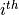
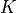

Analysis Module (compmech.analysis)¶
-
class
compmech.analysis.Analysis(calc_fext=None, calc_k0=None, calc_fint=None, calc_kT=None)[source]¶ Class that embodies all data required for linear/non-linear analysis
The parameters are described in the following tables:
Non-Linear Algorithm
Description
NL_methodstr,'NR'for the Newton-Raphson'arc_length'for the Arc-Length methodline_searchbool, activate line_search (for Newton-Raphson methods only)max_iter_line_searchint, maximum number of iteration attempts for the line-search algorithmmodified_NRbool, activates the modified Newton-Raphsoncompute_every_nint, ifmodified_NR=True, the non-linear matrices will be updated at every iterations
iterationskT_initial_statebool, tells if the tangent stiffness matrix should be calculated already at the initial state, which is required for example when initial imperfections take placeIncrementation
Description
initialIncinitial load increment size. In the arc-length method it will be the initial value for

minIncminimum increment size; if achieved the analysis is terminated. The arc-length method will use this parameter to terminate when the minimum arc-length increment is smaller than
minIncmaxIncmaximum increment size
Convergence Criteria
Description
absTOLthe convergence is achieved when the maximum residual force is smaller than this value
maxNumItermaximum number of iteration; if achieved the load increment is bisected
too_slow_TOLtolerance that tells if the convergence is too slow
- Parameters
- calc_fextcallable, optional
Must return a 1-D array containing the external forces. Required for linear/non-linear static analysis.
- calc_k0callable, optional
Must return a sparse matrix containing the linear stiffness matrix. Required for linear/non-linear static analysis.
- calc_fintcallable, optional
Must return a 1-D array containing the internal forces. Required for non-linear analysis.
- calc_kTcallable, optional
Must return a sparse matrix containing the tangent stiffness matrix. Required for non-linear analysis.
- Returns
- incrementslist
Each time increment that achieved convergence.
- cslist
The solution for each increment.
- Attributes
- NL_method
- absTOL
- calc_fext
- calc_fint
- calc_k0
- calc_kT
- compute_every_n
- cs
- increments
- initialInc
- kT_initial_state
- last_analysis
- line_search
- maxInc
- maxNumIter
- max_iter_line_search
- minInc
- modified_NR
- relTOL
- too_slow_TOL
Methods
static(self[, NLgeom, silent])General solver for static analyses
-
static(self, NLgeom=False, silent=False)[source]¶ General solver for static analyses
Selects the specific solver based on the
NL_methodparameter.- Parameters
- NLgeombool
Flag to indicate whether a linear or a non-linear analysis is to be performed.
- silentbool, optional
A boolean to tell whether the log messages should be printed.
-
compmech.analysis.freq(K, M, tol=0, sparse_solver=True, silent=False, sort=True, reduced_dof=False, num_eigvalues=25, num_eigvalues_print=5)[source]¶ Frequency Analysis
- Parameters
- Ksparse_matrix
Stiffness matrix. Should include initial stress stiffness matrix, aerodynamic matrix and so forth when applicable.
- Msparse_matrix
Mass matrix.
- tolfloat, optional
A tolerance value passed to
scipy.sparse.linalg.eigs.- sparse_solverbool, optional
Tells if solver
scipy.linalg.eig()orscipy.sparse.linalg.eigs()should be used.Note
It is recommended
sparse_solver=False, because it was verified that the sparse solver becomes unstable for some cases, though the sparse solver is faster.- silentbool, optional
A boolean to tell whether the log messages should be printed.
- sortbool, optional
Sort the output eigenvalues and eigenmodes.
- reduced_dofbool, optional
Considers only the contributions of
 and
and  to the stiffness
matrix and accelerates the run. Only effective when
to the stiffness
matrix and accelerates the run. Only effective when
sparse_solver=False.- num_eigvaluesint, optional
Number of calculated eigenvalues.
- num_eigvalues_printint, optional
Number of eigenvalues to print.
- Returns
- The extracted eigenvalues are stored in the
eigvalsparameter and - the  eigenvector in the
eigvecs[:, i-1]parameter.
- The extracted eigenvalues are stored in the
-
compmech.analysis.lb(K, KG, tol=0, sparse_solver=True, silent=False, num_eigvalues=25, num_eigvalues_print=5)[source]¶ Linear Buckling Analysis
It can also be used for more general eigenvalue analyzes if  is the tangent stiffness matrix of a given load state.
- Parameters
- Ksparse_matrix
Stiffness matrix. Should include all constant terms of the initial stress stiffness matrix, aerodynamic matrix and so forth when applicable.
- KGsparse_matrix
Initial stress stiffness matrix that multiplies the load multiplcator
of the eigenvalue problem.- tolfloat, optional
A float tolerance passsed to the eigenvalue solver.
- sparse_solverbool, optional
Tells if solver
scipy.linalg.eigh()orscipy.sparse.linalg.eigsh()should be used.- silentbool, optional
A boolean to tell whether the log messages should be printed.
- num_eigvaluesint, optional
Number of calculated eigenvalues.
- num_eigvalues_printint, optional
Number of eigenvalues to print.
Notes
The extracted eigenvalues are stored in the
eigvalsparameter of thePanelobject and the eigenvector in theeigvecs[:, i-1]parameter.
-
compmech.analysis.static(K, fext, silent=False)[source]¶ Static Analyses
- Parameters
- Ksparse_matrix
Stiffness matrix. Should include initial stress stiffness matrix, aerodynamic matrix and so forth when applicable.
- fextarray-like
Vector of external loads.
- silentbool, optional
A boolean to tell whether the log messages should be printed.